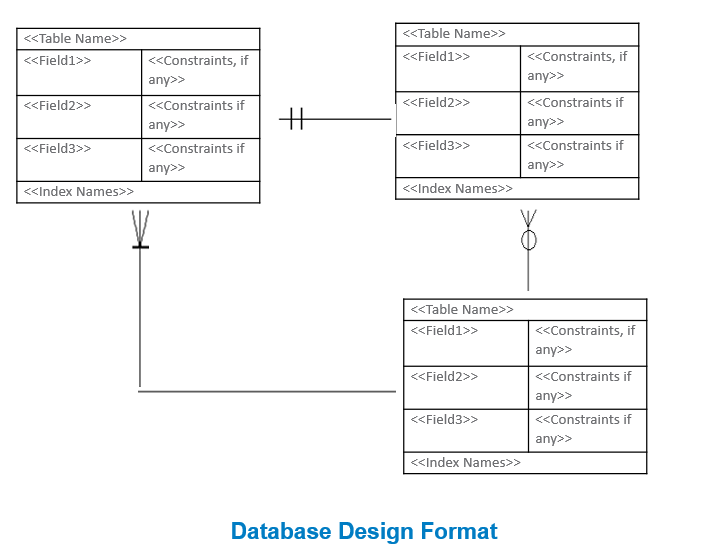
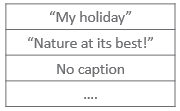
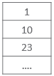
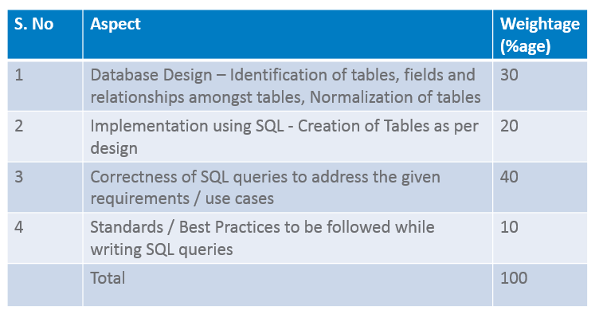

This project is to be done after completing Module 2
Learners are suggested to use Oracle as the database for project development
Suggested duration: 16 person-hours (2 learners can do in 1 day)
Suggested team size: 2
After completing this project, a learner should be able to understand and implement the following stages in Database Development Life Cycle in a given real life scenario and use SQL for basic database operations.
Analysis of data requirements for a given scenario
Design a suitable database by identifying the tables and their relationships
Normalization of tables as per the requirements
Implementation of relational schema using SQL to create tables in the database
Usage of SQL to implement database operations to solve the given use cases (scenarios) in the project
CREATE, INSERT, SELECT, UPDATE, DELETE statements
Row Functions and Aggregate Functions
Group By and Having
Ever wondered how Instagram stores your pictures, your likes, tags...!
Well,the real Instagram database may be quite complex in nature,we will design a small database that allows
us to store information about pictures,users who posted them etc.
The project is to design a relational database that allows you to store and manage pictures from multiple users of the system in line with the guidelines given below:
:
The database will store information about users of the system, primarily their names and email addresses, and pictures they post.
Database stores captions of pictures, picture path, their date of posting, who posted them. A picture can be posted by only one user.
Pictures can be tagged for – Art, Science, Music, History and Engineering. Multiple tags are allowed for the same picture.
Like functionality is also supported i.e. a user can like multiple pictures.
Use unique ids for primary keys wherever applicable, e.g. picture id, user id etc.
Normalize the tables to sufficient depth so that anomalies and data duplication can be avoided to a larger extent
Go through the queries to know more about database design. E.g. query"Who (user id) has liked the most pictures?"tells that database must store user ids of users liking the pictures.
What needs to be done:
Identify tables, respective fields and relationships among tables
Create tables
Insert data into tables
Write SQL to address the following queries
Development Approach:
After identifying tables, respective fields and relationship among tables, learners should create database design diagram in the following format and discuss with the faculty.
Incorporate the feedback from faculty on correctness of database design and proceed with creation of tables and data insertion.
Identify the appropriate operations and express them in SQL.

Queries
Display Picture ids of pictures posted by user id "1"
Display captions of pictures posted by "2". Display 'No caption' if caption is not having any value.
Which pictures (picture ids) and by which users (user ids) have been posted in last 1 year?
Which picture/s (picture ids) has received maximum likes?
Display all picture ids in descending order of the likes they have got. Also display total no. of likes each picture has received
Display picture ids of pictures with more than 3 likes.
Who (user id) has liked the most pictures?
Which day of the week users are posting the maximum no. of pictures
Get the count of pictures posted during weekends.
Find pictures (picture ids) with more than 3 tags.
Display pictures with "London" in their caption. Do case insensitive search.
Which pictures (picture ids) are stored on my "D:" drive?
Display year, pic_id of pictures posted by User id -3 in last 5 years.
Display first and last names of all users who have either have an account on gmail or yahoo.
Add new user with user-name, his first & last name and email.
Add a like for Picture id 6 by user id 7.
Delete all likes done by user id '3'.
Update last name for user id '9' to 'Kumar'.
Update email address of User "Angella Smith"to asmith@gmail.com.
Add a new tag for "Literature".
Examples
Display Picture ids of pictures posted by user id "User-1"

Display captions of pictures posted by "User-2". Display 'No caption' if caption is not having any value.


The project provides a practice on following concepts to learners: